Getting started
Installation
Hitbench is a Windows x64 desktop workstation for arranging osu! hitsounds. You need an extracted osu! mapset with its .osu files and song audio, and a location where Hitbench can write project data.
- Download
hitbench-latest.zipfrom the latest GitHub release. - Extract the entire archive into a writable folder. Run the extracted
Hitbench.exe; do not run it from inside the ZIP. - Keep the application and its data folders together. A release includes the .NET runtime; installing a separate runtime is unnecessary for the packaged release.
- Use Locate osu! folder or Locate mapset folder on Home to choose your source files.
A protected installation directory can prevent saving, importing, or updating. Choose a folder your Windows account can write to. To build from source instead, use the .NET 10 SDK and the build instructions in the repository README.
The screenshots show representative projects. Your available skin samples, tracks, and mapsets depend on your local files.
Your first project
Build a small arrangement from start to finish: choose a song, assign one sound to a track, place four hits, listen, and export a draft. This walkthrough uses Heavy Serenade, a project named First hitsounds, and an existing mapset clap. You can follow it with any extracted mapset and a short sound of your choice.
Each screenshot shows the entire application window. Select an image to open its full 1600 × 900 version and inspect the controls. Your song artwork, timing, sample names, and available files will differ.
Before you begin: run Hitbench from an extracted, writable application folder. Have a mapset containing at least one .osu difficulty and its song audio. Keep that source folder in place: the project will continue to read its audio and timing from it. If the mapset has no suitable hitsound, prepare a short .wav, .ogg, or .mp3 file to import at step 6.
1. Locate the folder containing your mapsets
Open Hitbench's Home screen. If your songs already appear, continue to step 2. Otherwise, choose Locate osu! folder and select the installation containing osu!.exe, or choose Locate mapset folder to browse an existing collection directly. When a collection is already configured, the ellipsis button beside Search mapsets opens the mapset-folder picker.
In the picker, select the parent folder of your mapsets, then choose Select folder. For example, if your difficulty is at Songs/My song/Normal.osu, select Songs. Wait for scanning to finish before searching.

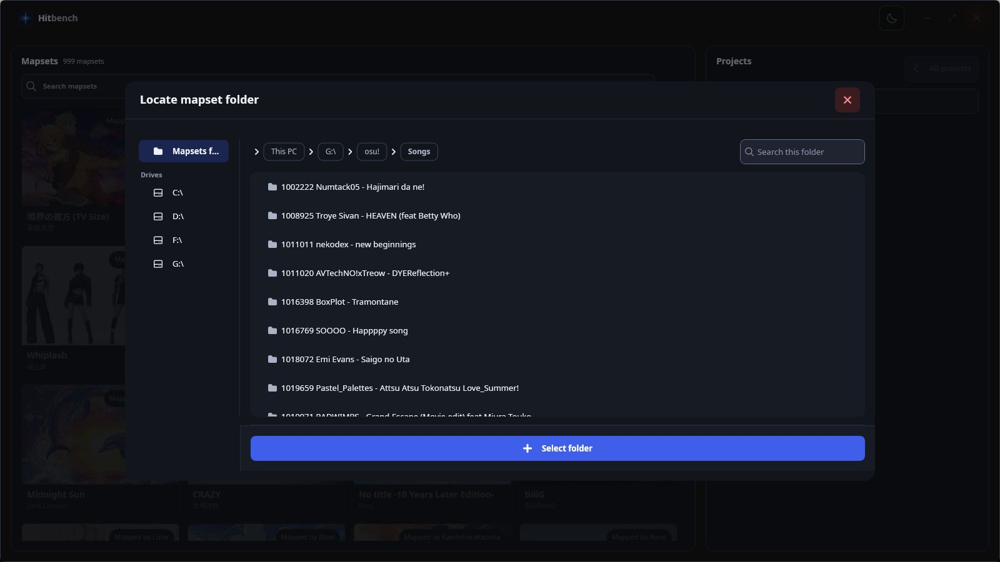
If the list stays empty: extract .osz archives first, check that each immediate song folder contains its .osu files, and clear any search text. Selecting a single song folder, a folder of unopened archives, or osu!lazer's internal storage will not produce the expected collection. See Mapsets & projects for the supported layout.
2. Find and select your song
Type part of the song title in Search mapsets. Select the correct card and check its title, artist, and mapper; different mapsets can share a title. Selecting a card highlights it and changes the Projects panel on the right to that mapset.
Choose Create a new project in the Projects panel. This creates a Hitbench arrangement linked to the selected source; you do not need to modify the source difficulty to begin.

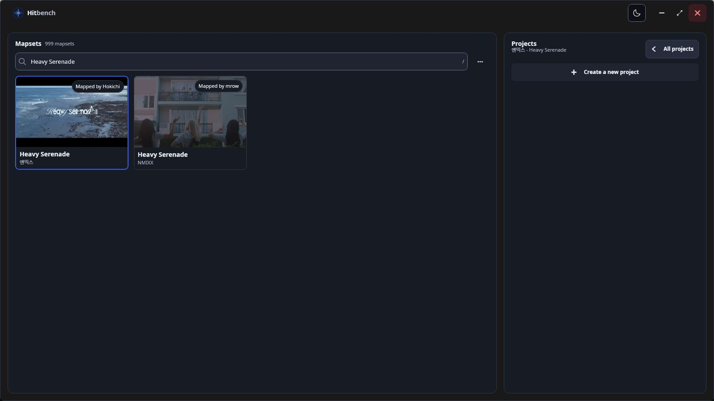
There is no difficulty selector in this workflow. The first top-level .osu file in ordinal filename order supplies audio and timing. If the loaded song or BPM is unexpected, inspect that source file before investing time in the arrangement.
3. Name and create the project
Enter First hitsounds, or another unique name, in the field that appears. Choose the blue plus button at the field's right edge to confirm; its accessible name is Create project.

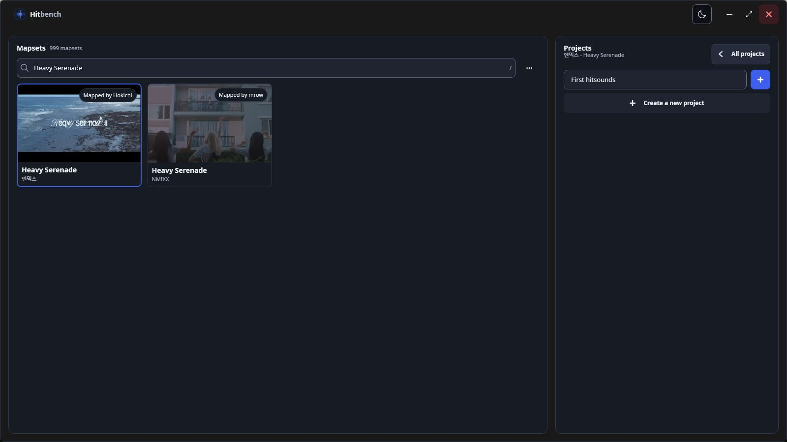
Use a nonblank name that is valid as a Windows folder name. Avoid < > : " / \ | ? *, trailing spaces or dots, and names such as CON or NUL. Names must be unique across all Hitbench projects, ignoring letter case. If creation is rejected, correct the name or choose a new one rather than repeatedly confirming the same value.
4. Review the mapset samples offered for import
When Hitbench finds importable samples, an Import from mapset dialog appears. Expand Mapset Samples to see the files. Review their checkboxes, leave the sounds you want selected, and choose Import selected. For this walkthrough, keep a short clap available; the example uses drum-hitclap7.ogg.

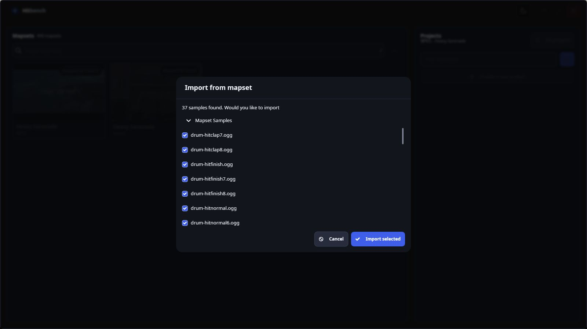
No import dialog? The mapset may contain no eligible samples; continue and import your own at step 6. Choosing Cancel skips this import rather than abandoning the project. You can return to Actions → Import mapset samples later. If only some files fail, read the reported failures, inspect the imported list, and retry the missing files.
5. Get your bearings in the empty workstation
Wait for the song waveform to load. The top toolbar contains Play/Stop, Select/Draw, marker modes, Export, Actions, Open, Add, Samples, subdivision, and zoom. Beneath it, the waveform shows the song, the control-point lane shows automation, and the large lower area holds your tracks.

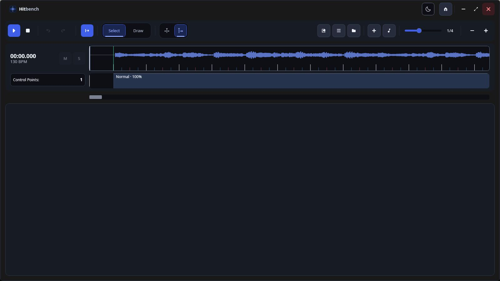
The example starts at 00:00.000 with a 1/4 subdivision. Its 130 BPM and initial Normal · 100% control point come from this mapset; keep your own source timing. The initial timing offset can leave a short space before the first beat. You will draw in a track below the control-point lane, not on the waveform.
If the waveform never loads or the project reports missing audio, check the source mapset and its AudioFilename before proceeding. Opening the project does not create an independent copy of the song.
6. Choose a sound and create its track
Choose the toolbar Samples button (the musical-note icon), or press F2, to open Manage Samples. Expand Mapset Samples, locate a short sound, and use its play button to preview it. In this example, choose drum-hitclap7.ogg.
Open that sample row's actions menu (the three horizontal lines), then choose Create track. This creates a sample track with that file already assigned. Close the manager with its upper-right close button to return to the timeline.

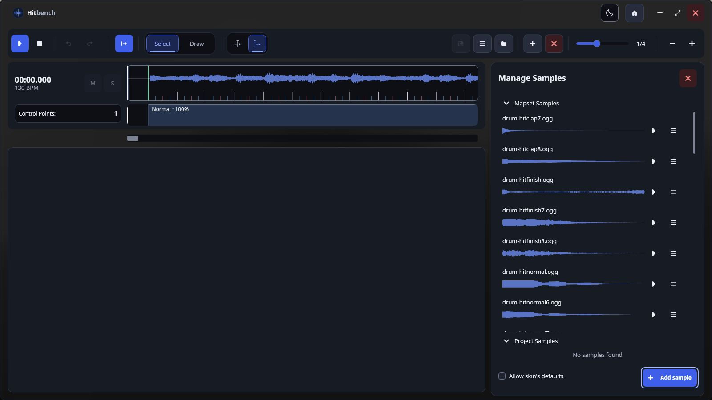
Using your own sound: choose Add sample in the manager. Browse to a supported audio file, check its selection box so it appears in the selected-samples list, and confirm the import. Merely highlighting or previewing a file does not select it for import. Find it under Project Samples and use the same Create track action. The Managing samples guide includes a full screenshot of the picker and explains multiple-file selection.
7. Check the track before drawing
You should now see an expanded track named New Track. Its left side contains the track name, volume slider, sample-settings gear, and M (mute) and S (solo). Its right side is the beat grid where you will place your sounds.

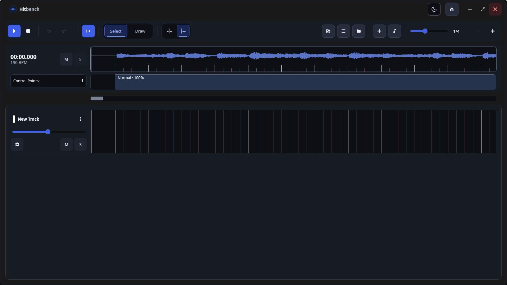
Open the gear if you need to verify the assignment: the sample selector should show your chosen source, such as Mapset/drum-hitclap7.ogg, rather than None. Close the settings popup when finished. If you created a blank track through Add → Sample Track instead, assign the file here before drawing.
Start with track volume at 100% and leave M and S off. Optionally double-click the track name or color swatch, enter a useful name such as Clap in Change Name and Color, and choose Save. The screenshots retain New Track so the default is easy to recognize.
8. Draw a short four-hit pattern
- Choose Draw in the toolbar, or press 2 while the workstation has focus.
- Set the subdivision control near the toolbar's right side to 1/4. This divides each beat into four editing positions; it does not mean that every click is one whole beat apart.
- In the track's grid, click four different vertical grid positions near the beginning of the song, after the initial timing offset. Aim for clear, separate attacks. You do not need to reproduce the example's exact rhythm.
- Look for four small vertical blocks. Each block is one playback trigger for the assigned sound; its displayed height is not a note duration.

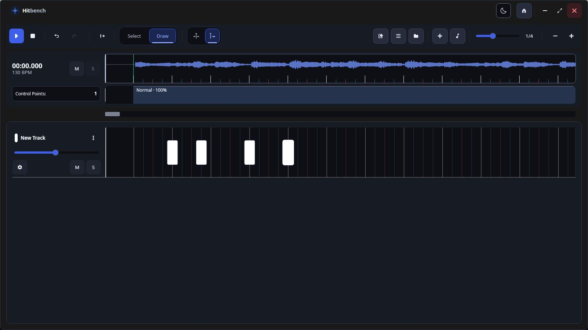
Nothing appears? Confirm Draw is selected, the track is expanded, and you are clicking its grid inside the song's duration. Close any dialog or drawer intercepting input. Clicking an already occupied position on the same track does not add another identical placement. Use the toolbar's zoom buttons if grid lines are too close together.
To adjust a placement, choose Select or press 1, then drag the block to another grid position. Use Ctrl+Z to undo a supported timeline edit and Ctrl+Y to redo it. For a longer arrangement, see Timeline editing; keep this first draft small.
9. Play the pattern and check what you hear
Click the waveform before your first placement, or press Ctrl+Home to seek to the song's start. Choose Play or press Space. The button changes to Pause, the time advances, and the marker crosses your placements. You should hear the song together with your four sample attacks.

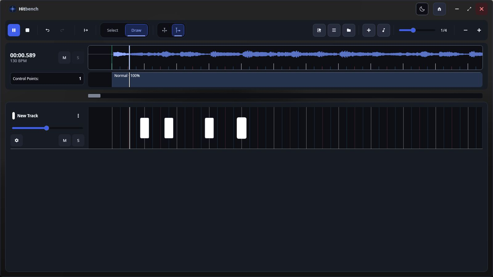
Press Space again to pause; use Stop or Shift+Space to stop. With the moving marker selected, enable Follow (F) if playback leaves the visible area. The alternative centered marker is explained in Playback & navigation.
If the song plays but your hits do not: preview the sample in Manage Samples, confirm its track assignment, check M/S, and inspect the track and control-point volumes. If everything is silent, open preview volume with Alt+V and check both Audio and Master, along with your Windows output device. Application preview volume is separate from the arrangement; use track or control-point volume when changing the exported balance. Mute and solo affect export too.
10. Export a draft into the project folder
Stop playback. Open the toolbar Export button: it is the export-arrow icon immediately before the three-line Actions button. In the dialog, use these settings for the first draft:
- Difficulty name: leave Hitsounds or enter another valid, recognizable difficulty name. This is separate from the Hitbench project name.
- Starting sample index: leave 1 for this isolated first export.
- Single sample format and Mixed sample format: leave both at .ogg to follow the example.
- Destination: choose Project. This writes the draft into the project's Export folder.
- Overwrite everything: leave unchecked. Read any collision warning before changing this option.
- Show files after export: optionally enable it to open the destination when export finishes.

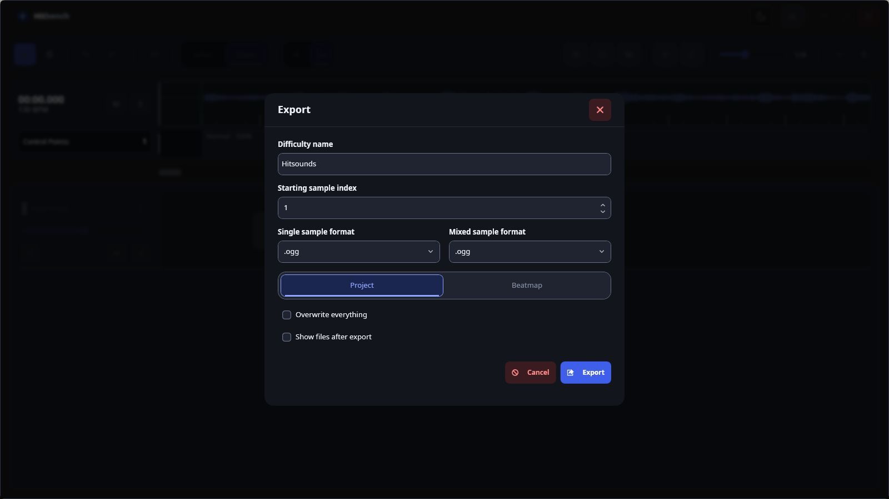
Choose the dialog's blue Export button and wait for processing to finish. If an error appears, inspect its message and the destination before retrying. Missing/unreadable samples, file collisions, and an unwritable folder need to be resolved first. See Export settings for the options you can change later.
11. Verify the generated files
Open the project folder through the toolbar's Open folder menu, then look inside Export. For this example the destination is projects/First hitsounds/Export/ beside Hitbench.exe. Check that it contains a generated .osu difficulty and the audio files needed by the arrangement.
The sample recording can be reused by all four hits, so four placements do not necessarily produce four audio files. Generated names can also differ from the original sample's name. Keep the compatibility ownership file .osuhitsounder-export.json with the output; later exports use it to recognize files they own.
The draft is not a standalone song package. The generated difficulty still references the source song audio, and export does not automatically merge the hits into an existing playable difficulty. When you are ready to test in osu!, put the generated difficulty and samples in the intended mapset with its original song audio, or review the Beatmap destination in Output & verification. Inspect filenames and existing files before copying or replacing anything.
Open the generated hitsound difficulty in osu! and listen to the short passage. Confirm that all four attacks occur at the expected times and balance. Return to Hitbench to adjust the pattern, then export and verify again. A failure to launch File Explorer after export is separate from generating the files: check the folder before assuming the export failed.
12. Return Home and resume your work
Choose the Home button in the application's upper-right header. Your project should appear under History in the Projects panel. Open First hitsounds there to continue. If you selected a different mapset and cannot see it, clear that selection with All projects and search all projects.

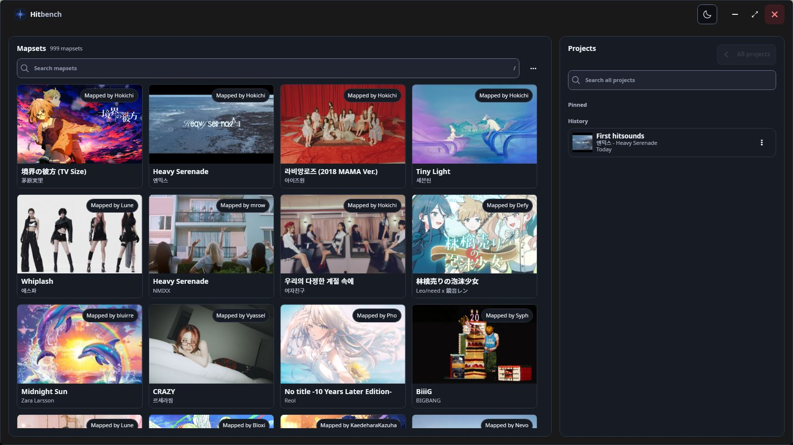
Timeline editing saves automatically; there is no routine Save button after each hit. Return Home or close normally to let pending saves finish. If a save error appears, keep Hitbench open, fix the reported access/path problem, and use Retry save. Back up the complete project folder and retain the source mapset/audio; autosave is not a historical backup.
Your first-project check: the song loads, one track has a valid sample, four blocks appear on its grid, playback triggers them, the export contains a difficulty and required samples, and the project is available from Home. You can now add layers with Tracks & organization, shape sections with Control points & ramps, or build pitched parts with Instrumental arrangement and Importing MIDI.
Mapsets & projects
Choose the correct source folder
Locate osu! folder expects an installation with osu!.exe and reads its Songs folder. Locate mapset folder expects the parent of your mapset folders: for example, choose My maps when the files are in My maps/Song A/*.osu. Scanning looks for top-level .osu files inside immediate child folders.
Extract .osz archives first. A folder containing only archives, deeply nested mapsets, or osu!lazer's opaque storage is not an equivalent source layout. Refresh the list after adding mapsets. Search helps narrow the available list; it does not unpack or repair a source folder.
The first top-level .osu file in ordinal filename order supplies the project's timing and audio information. There is no difficulty chooser. When several difficulties have different timing or audio, inspect that first source file before arranging.
Create, find, pin, and remove projects
Project names must be unique across the application's projects, ignoring letter case. Use a nonblank Windows filename: avoid < > : " / \ | ? *, trailing spaces or dots, and reserved device names such as CON, NUL, COM1, and LPT1.
Select a mapset to filter its projects; select it again or use Show all projects to clear that filter. Use project search across the full list when no mapset is selected. Open a project to resume it. The project actions menu offers pinning, unpinning, and removal; pin useful projects for quick access.
Removing a project permanently deletes its project directory. Confirm the name and make a backup first. This is not an undoable timeline edit. The source mapset and the shared saved sample library are separate from the project directory.
Automatic saving, storage, and backups
Hitbench batches edits before writing them. Returning Home or closing normally lets pending saves finish. If a save error appears, keep the application open, resolve the reported path/access problem, and use Retry save. An edit on screen is not proof that a failed save reached disk.
| Location beside Hitbench.exe | Purpose |
|---|---|
projects/<name>/project.json | Arrangement, mappings, timing-related settings, and project state. |
projects/<name>/Samples/ | Imported project audio, including instrument folders and cached defaults. |
saved/ | Shared sample library used across projects. |
appsettings.json | Application preferences such as appearance and preview volume. |
data.json | Home's cached mapset information. |
Back up complete project directories together with saved/; retain the original mapsets and audio too. Autosave protects ongoing work from being forgotten, but does not keep historical backup versions.
Reopening a project reads audio and timing from its source mapset again. Moving or deleting that folder can break reopening. The source audio must be an existing relative path inside the mapset folder; an absolute path or a path escaping that folder is not accepted. Restore the original source path if it is missing; there is no general project-relocation repair wizard.
Arranging & playback
The workstation
The toolbar holds transport, undo/redo, Select/Draw, marker mode, Export, project actions, folder shortcuts, Add, Samples, subdivision, and zoom. The waveform shows the song and beat lines; the control-point lane beneath it shapes sample sets and volume. The lower grid contains sample tracks and access to instrumental arrangements.

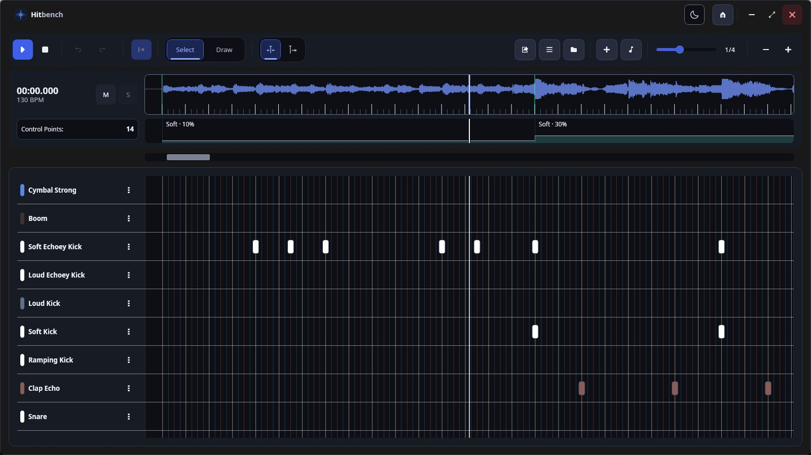
Use the subdivision selector to change the beat grid. A finer subdivision gives more placement positions; zoom changes their spacing on screen. The toolbar minus/plus buttons change zoom. These controls change your editing view; changing subdivision alone does not move existing notes.
Actions contains Resnap, Import mapset samples, Import MIDI, Refresh samples, the expand/collapse-all action, and Config Hitnormal. The separate Open folder menu opens the project or beatmap folder. Close a drawer or modal to re-enable actions that are unavailable while it is open.
Playback & navigation
Use Play/Pause or Space to audition the song and your sounds together. Stop or Shift+Space stops transport. Click the waveform to seek; use the horizontal scrollbar to explore longer passages. Left/Right navigate grid lines, while Ctrl+Left/Right navigate whole beats. Ctrl+Home/End seek to the song's start/end.
Choose a marker mode
- Centered/static marker: the marker stays in the center while the song and grid move. Drag the waveform to pan through time. Home/End move the timeline view to its limits.
- Moving marker: the marker travels over the timeline. Waveform scrubbing can scroll at the edges. Enable Follow or press F to keep the marker visible during playback. Manual navigation and selection can turn following off.
Switch modes using the marker buttons or F8. Your choice is saved with the project. Follow is available in moving-marker mode; a disabled Follow button in centered mode is expected.

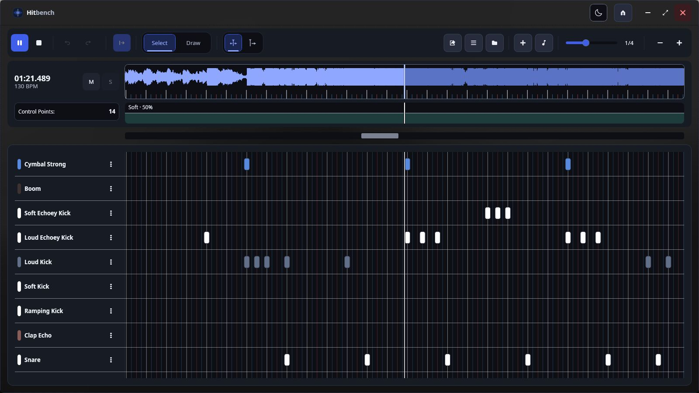
Preview volume
Alt+V opens the volume overlay; Alt+wheel also adjusts it. Its Audio and Master controls balance preview playback. Use the arrow keys for five-point changes and Escape to close the overlay. Master volume ranges from 0 to 100 and is an application preference. Track volume and control-point volume are separate arrangement settings; use those when changing the exported sound.
Tracks & organization
Choose Add → Sample Track (Ctrl+N) for a sound repeated at selected timestamps. Choose Instrumental Track (Ctrl+Shift+N) for a pitched part with a different sample mapped to each key.
- Expand a sample track to reveal its volume, sound settings, and M/S controls.
- Open the track's settings and choose its sample source. A custom sample track assigns one file to every placement on that track; replacing the assigned sample changes all those placements.
- For a default hitsound track, choose the sample set/type instead. Default resolution depends on the project's available defaults and hitnormal configuration.
- Set track volume between 5% and 200%. Listen for clipping when stacking loud samples.

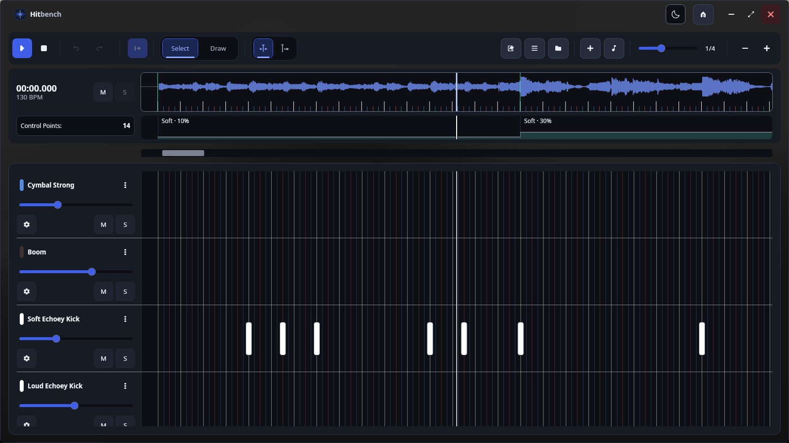
Click M to mute a track; S solos it. When usable soloed tracks exist, other tracks are excluded. Mute and solo also affect export, so review them before making your final output.
Edit the track name and color to identify its role. Reorder using drag and drop or Move Up/Move Down in its actions menu. Collapse individual tracks, or use F4 to expand/collapse all tracks. Instrumental tracks expose View Arrangement and Keys Mapping.
Delete Track removes the track and its placements; populated tracks require confirmation. Track removal cannot be undone. It does not itself delete the sample files, which can still be used elsewhere in the project.
Timeline editing
Place, select, and move samples
Press 2 for Draw and click a track's grid to add a placement at the nearest grid position. A placement at that same timestamp is selected instead of duplicated. Press 1 for Select. Click a node to select it, Ctrl+click to toggle it in the selection, or drag a selection rectangle across the grid.
With a sample grid focused in Draw mode, navigate the active grid position with Left/Right and press Enter to place a sample. Right-click a sample node to remove it directly.
Drag a selected node or group to a new grid position. Hold Ctrl during a node drag to copy the group. Use Alt+Left/Right to move selected samples by a grid step, and Alt+Up/Down to transfer them between tracks. Transferring to a different sample track uses that destination track's sound. Occupied or invalid destinations can prevent a move. Escape cancels a drag or clears selection; Delete removes selected placements.

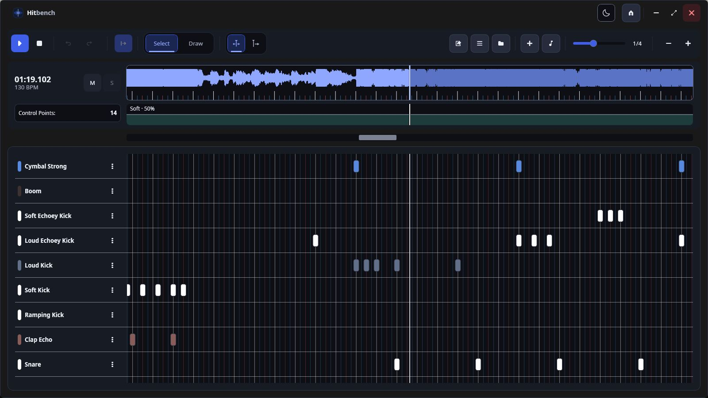
Copy and paste timing patterns
- Select the source placements and press Ctrl+C.
- Select the destination sample track and move the playback marker to the desired start.
- Press Ctrl+V. The copied relative timestamps are anchored to the nearest grid position at the marker.
The sample clipboard carries timing offsets, not a bundle of source tracks and sounds. Pasting a kick pattern into a snare track creates snare placements. Existing collisions can reject the paste; candidates past the song end are skipped. Check the result near boundaries.
Resnap, undo, and redo
To realign an arrangement, set the intended subdivision and choose Actions → Resnap. This considers sample nodes, instrumental notes, and movable control points. It avoids occupied destinations and skips locked/out-of-range notes and the fixed offset control point.
Ctrl+Z/Ctrl+Y undo/redo supported placement, movement, and deletion batches. A new edit clears redo. Instrumental notes have their own editor history. Undo is not a general recovery system for file deletion, track removal, control-point changes, or every setting; back up before broad changes.
Control points & ramps
A control point begins a zone that supplies a sample set and volume. Move the playback marker to the intended beat and press F6 to add a point at the nearest grid position. Click a zone/tag to edit its whole-number volume (5–100%) and Normal, Soft, or Drum sample set.

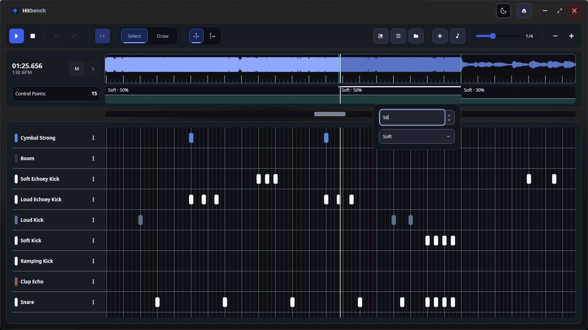
Points must have unique timestamps within the song. The initial offset control point anchors the timing and cannot be moved or deleted. Move other points using their timeline interaction or focus a tag and press Alt+Left/Right. Up/Down adjusts a focused tag's volume. Open its context menu with right-click or Shift+F10.
Change the shape of a zone
The point context menu lets you switch between a constant zone and a volume ramp, disable a point, split a zone, or delete a movable point. A ramp transitions from its starting volume toward the following point's volume. The final zone has no following target, so add an endpoint when you need a defined transition.
To split, place the playback marker strictly inside the zone and choose the split action. The split preserves the evaluated volume along an existing ramp. A marker on a boundary, a duplicate timestamp, or a position outside the zone cannot produce a new split.
Disabled points remain stored but do not drive automation. This allows comparisons without deleting their settings. Changes are applied over playing sample tails, so a long cymbal can change level while it continues ringing. Preview both the start and end of each transition before exporting.
Sounds & instruments
Managing samples
Open Samples or press F2. The manager groups Skin Defaults, Mapset Samples, and Project Samples. Expand a group and use the row's play control to hear a waveform preview.

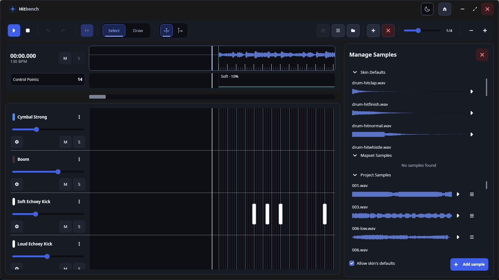
Import and organize audio
- Choose Add sample to open the sample picker. Browse drives/folders or search within the available location.
- Preview supported WAV, OGG, and MP3 files, check the files you want, and review the selected-file basket before importing.
- Resolve duplicate choices explicitly. A file already in the project is identified; replacing an existing file can change every track/key that uses it.
- Alternatively drag supported audio into the workstation, or use Actions → Import mapset samples to import from the current mapset again.
Imports create project copies. Use a managed sample's row actions to Edit, Save, Create track, or Delete. You can also drag a managed sample row into the track list to create a sample track. Skin-default rows are preview sources rather than ordinary editable project files.
Choose Edit to rename a sample's filename stem, then confirm the edit or press Enter; Escape cancels it. The extension remains separate. Renaming through Hitbench updates references. Mapset imports and instrumental tracks have their own sample subfolders; renaming an instrumental track keeps its owned folder and mappings in sync.
Use the sample picker
The left side provides the song folder, Saved Samples, and drives. Use the breadcrumb buttons to move back through folders. Search this folder filters the current location. Selecting a file shows its metadata/waveform and playback controls; Auto-play on select controls whether selection immediately previews it. Use the preview waveform to seek within a sound.
Checking a file adds it to Selected samples. The basket retains selections while you browse other folders, so review the entire basket before importing. Shift-selection can check a range. Remove individual entries or use Clear all to empty the basket without deleting audio files. Choose Import samples when ready, or close the picker to cancel. Single-sample mapping workflows allow one selected file; folder-mapping workflows select a folder instead of checking its audio files individually.
In the picker file list, Space toggles a file's checkbox, Shift+Space checks a range, and Enter opens a folder or checks the selected audio file. On a narrow window, Browse and Selected samples become separate panes; use their selector or F6 to switch. With the preview waveform focused, Left/Right seeks by 10 milliseconds and Home/End seeks to its limits. These controls apply inside the picker; F6 in the workstation adds a control point instead.

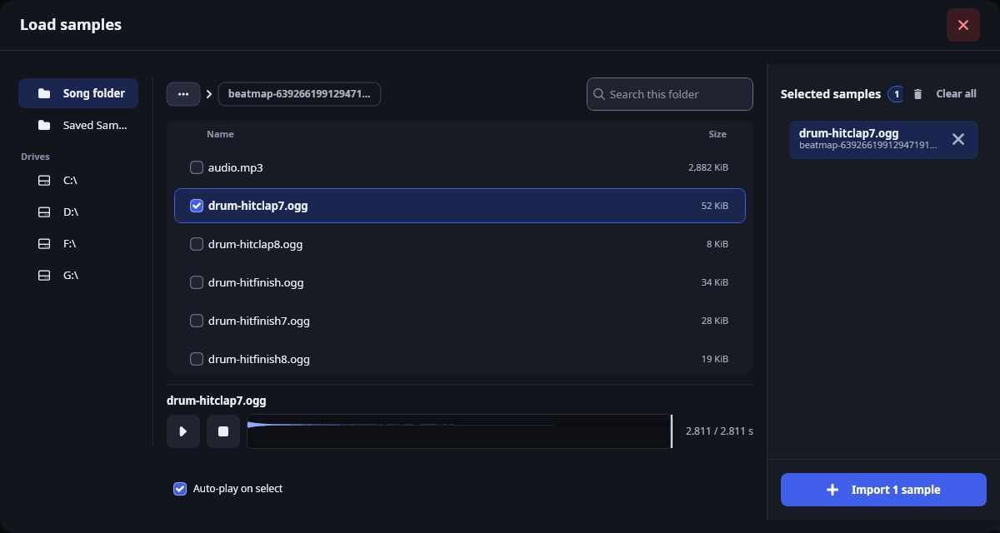
External changes and removal
Use Open → Project folder to inspect files. After replacing or changing audio outside Hitbench, choose Refresh samples or F5. Refresh reloads files; it does not infer where an externally renamed or moved file should now be mapped. Reassign a missing track sample or key mapping explicitly.
Delete permanently removes the project sample copy. It leaves track placements in place, so affected tracks become unavailable until assigned another sound. Deleting a project copy does not remove the original external file or a separate saved-library copy. File deletion cannot be undone with timeline history.
If only some imports fail, inspect the reported failures, check file access and decoding, and retry those files. Changing an extension alone does not convert an unsupported audio format.
Saved sample library
The shared library keeps reusable sounds outside any one project. In the sample manager, use a project sample's Save action to copy it into the application's saved/ directory.
- Open Add sample in another project.
- Choose the picker's Saved Samples location.
- Preview and select sounds, then import them into the current project.
Saved Samples is a location in the picker, rather than a fourth group in Manage Samples. Importing it creates a project copy: a saved-library entry and the project's working sample are distinct. Existing legacy project-local saved libraries are migrated to the shared location. Include saved/ in backups or when moving the extracted application; copying only one project's JSON does not carry the shared library.
Skin defaults
Default tracks use osu! hitsound roles instead of a single custom file. Normal, Soft, and Drum are sample sets; hitnormal, whistle, finish, and clap identify the sound's role within a set.
When an osu! installation is configured, Hitbench reads its osu!.<Windows user>.cfg skin selection and copies recognized default hitsounds from Skins/<skin> into the project's cache. The manager's Allow skin's defaults checkbox controls their use. Refresh samples after changing the configured skin or its files.
Choosing only a mapsets folder does not locate a separate osu! skin installation. If the configuration/skin is missing or a role has no available file, inspect the project's cached defaults and configuration. Do not assume every skin has all sets/roles or that Hitbench can supply every absent sound. A default track with no usable source can be unavailable.
Control-point sample sets, track settings, cached skin files, and hitnormal overrides work together. Audition a representative passage after changing any of them.
Hitnormal configuration
Choose Actions → Config Hitnormal to set the base hitnormal sound independently for Normal, Soft, and Drum.
- Select the sample set on the left.
- Preview and choose the desired source on the right. The current/default indicators identify the existing choice; choose the default option to return to default resolution.
- Repeat for other sets, then choose Save. Cancel leaves the pending choices unapplied.

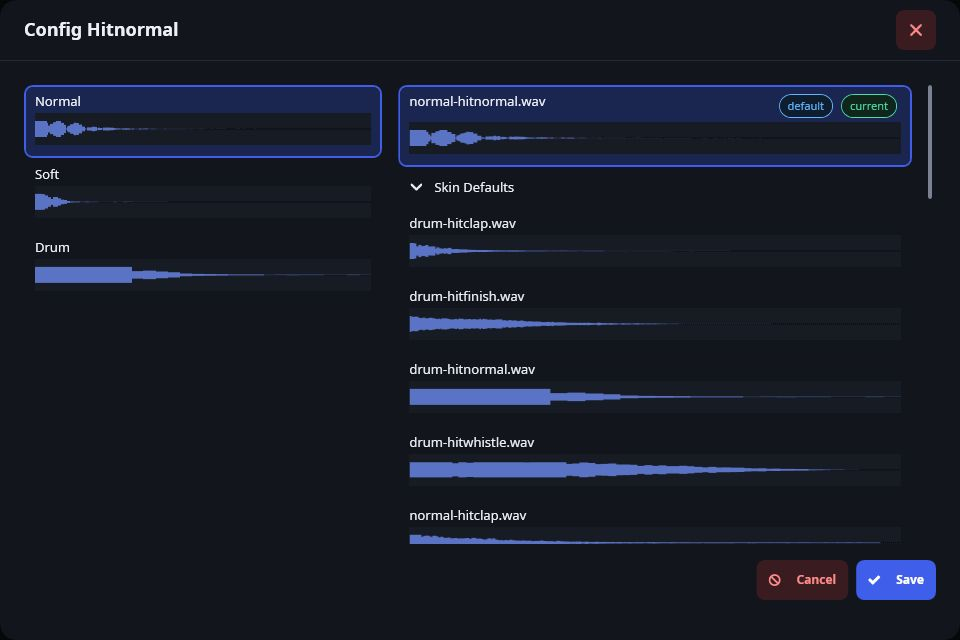
If a default sound is silent, check both this configuration and Allow skin's defaults, then verify that the referenced file exists. A custom track sample remains a separate choice.
Instrumental arrangement
An instrumental track arranges pitched sample attacks in a piano roll. It does not synthesize an instrument from a single recording. Create one through Add → Instrumental Track, then choose View Arrangement.
- Open Keys Mapping and assign recordings to the keys you will use.
- Return to the arrangement. Choose Draw and click the desired pitch/time intersection to place a note.
- Switch to Select to select and drag notes or a group. Ctrl+click toggles selection; dragging a rectangle selects a region.
- Audition the result with transport. Every note triggers its mapped sample; the recording itself supplies the sound's length.

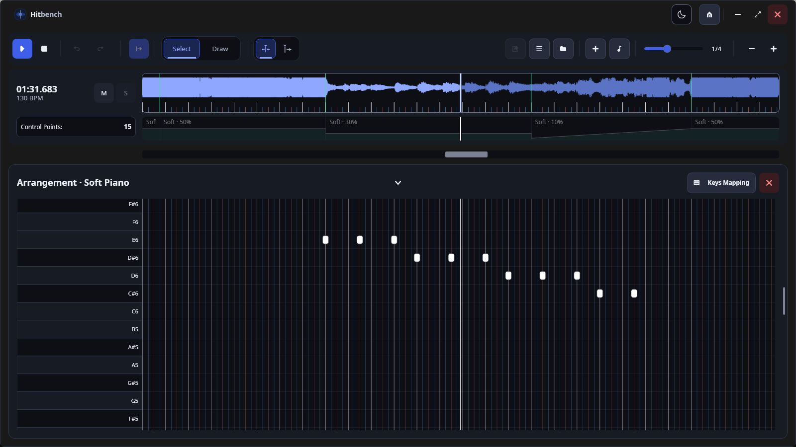
Arrow keys navigate pitch/time in the editor. Enter places a note in Draw mode or selects in Select mode; Ctrl+Enter toggles an existing note's selection. Alt+Left/Right moves selected notes by a grid step; Alt+Up/Down transposes by a semitone. Ctrl+A selects notes, Ctrl+C/V copies/pastes, Delete removes selected notes, and right-click removes an editable note. Ctrl+Z/Y uses the instrumental editor's own history.
Use Ctrl+Shift+Enter or the drawer chevron to expand/collapse the piano roll. Wheel scrolls pitch; Shift+wheel pans time, Ctrl+wheel zooms, Alt+wheel changes subdivision, and Ctrl+Shift+wheel changes lane height.
Keys range from C1 to B9. Unmapped keys cannot produce their intended sound until mapped. Imported read-only notes and notes outside 0 ≤ time < song duration are locked; the current interface has no unlock command. Correct their source/timing and reimport when necessary.
An instrument owns a sample folder. Renaming its track also updates that folder; conflicting folder names receive a suffix. Use mappings to connect keys to files rather than assuming that placing arbitrary audio in the folder assigns it.
Key mapping
Open Keys Mapping from an instrumental arrangement or track actions. Select a keyboard key, then use Load Sample to choose its audio, or enter the available sample filename and press Enter. A marked key has a mapping.

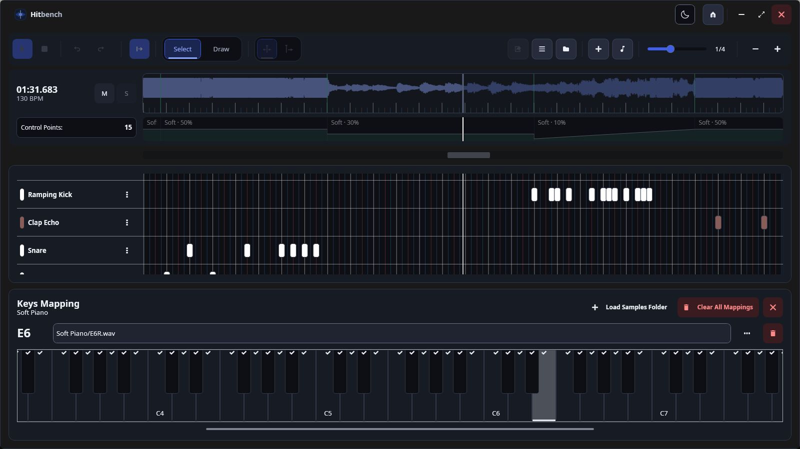
Delete removes the selected mapping. Clear All Mappings clears assignments, not the notes themselves. Notes remain in the arrangement but need a valid mapped sample to sound correctly.
Import a folder of note-named samples
- Prepare supported audio files whose names begin with key names: for example,
C4.wav,F#4-soft.ogg, orE6R.wav. - Choose Load Samples Folder and select the folder containing those files directly.
- Review conflicts where multiple files match a key or a key already has a mapping. Choose the intended assignment explicitly.
- Read the result counts for ignored/failed files, then inspect and preview the keys you need.
Matching ignores filename case and checks prefixes. Files in subfolders are not scanned recursively; unsupported formats and names without a recognized key prefix are ignored. A folder with several variations for one pitch needs your choice, rather than an assumed velocity-layer system. Replacing a key's mapping changes every note at that pitch on the track.
Importing MIDI
Choose Actions → Import MIDI and select a .mid or .midi file. Hitbench imports melodic note attacks into instrumental tracks, grouped by source track/channel. Map the resulting keys to samples before auditioning or exporting them. Track-name conflicts receive suffixes; duplicate attacks at the same key and time are merged.

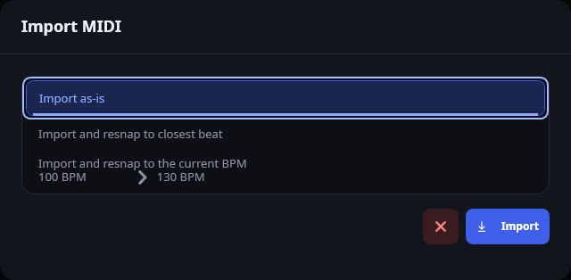
Choose the timing that matches your intention
| Mode | Result |
|---|---|
| Import as-is | Keeps MIDI elapsed timing, aligned from the project's first timing offset. Useful when the MIDI already follows the recording, even if notes fall between grid lines. |
| Import and resnap to closest beat | Starts with elapsed timing and snaps each attack to the current project subdivision. This quantizes timing; it does not scale an entire melody from one tempo to another. |
| Import and resnap to the current BPM | Maps musical beat positions onto the project's timing. Choose this when a phrase written at another tempo should follow the project tempo. |
For example, four quarter notes written at 100 BPM occupy more elapsed time than four quarter notes at 130 BPM. As-is retains the original elapsed spacing; current BPM places those beats using the project's timing. Use a fine subdivision before closest-beat import if you want to preserve small rhythmic differences.
When the MIDI has no explicit tempo, Hitbench automatically uses project-BPM mapping. When the complete source/project timing matches exactly, it automatically uses as-is. Otherwise the timing chooser appears. A MIDI with tempo changes should be checked across the whole song, not just its initial BPM.
Supported data and limitations
- Standard MIDI format 0 or 1 with ticks-per-quarter-note (PPQN) timing is supported.
- Percussion on channel 10 and pitches below MIDI note 24 are excluded after the relevant confirmation. The remaining MIDI range is 24–127, corresponding to C1–G9 in Hitbench's key names.
- Positive-velocity note-on events become sample attacks. Note duration, sustain expression, velocity layers, and synthesis are not recreated as a software instrument.
- Format 2, SMPTE time division, MIDI 2 data, malformed/incomplete files, conflicting simultaneous tempos, and files without usable melodic notes can be rejected.
- Attacks beyond the song bounds are retained as locked notes. The importer does not extend the song or provide an unlock button.
If timing is wrong, review the chosen mode, source timing, song offset, and subdivision. Correct the source or import again with the appropriate mode; remove an unwanted imported track deliberately, since track deletion cannot be undone. Avoid repeatedly importing into your only copy of a finished arrangement—back it up first.
Export
Export settings
Use the dedicated toolbar Export button. Before opening it, verify missing samples/key mappings, automation, and track mute/solo states. Muted tracks and tracks excluded by solo are omitted from output.

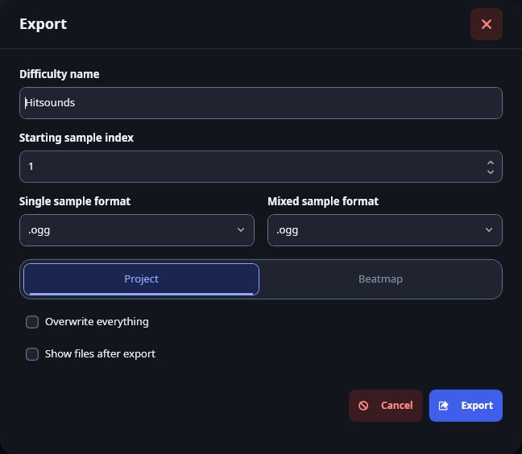
| Option | How to use it |
|---|---|
| Difficulty name | The generated difficulty's name. Enter a valid nonblank filename stem; avoid reserved names and invalid Windows filename characters. |
| Starting sample index | An integer from 1 to 999 used as the first generated sample-bank index. Choose a different range when needed to avoid colliding names; this is not a guarantee that every later output name is free. |
| Single sample format | Choose .ogg, .wav, or .mp3 for individually generated sounds. |
| Mixed sample format | Choose .ogg, .wav, or .mp3 for combinations mixed by the exporter. WAV avoids lossy encoding; compressed formats trade size against encoding characteristics. |
| Project | Writes into the project's Export folder, separate from the source mapset. |
| Beatmap | Writes into the original source mapset folder. Existing filename collisions are refused. |
| Overwrite everything | Available only for Project output. Intentionally replaces its output tree; review and back up anything you put there. |
| Show files after export | Opens the output location after successful publication. |
Choose Export to begin and watch the progress. You can cancel processing. Cancellation before publication preserves the existing output. If a failure reports retained recovery assets, keep those files until you understand the reported recovery instructions.
Do not use Project/Export as unrelated file storage. Ordinary Project exports track ownership and protect modified or unowned collisions. Overwrite everything is the deliberate replacement option. Beatmap export has no equivalent overwrite mode: change the name/index or review Project output first when a collision is reported.
Output & verification
The output contains a generated hitsound .osu difficulty and its generated audio. The exporter combines overlapping sounds where needed and reuses appropriate samples. It carries relevant source metadata/timing into a dedicated hitsound difficulty, replaces its hit objects with the generated arrangement, and sets its difficulty name from your export choice.
This creates a hitsound difficulty to inspect and use in your mapping workflow; it does not automatically merge your sounds into an existing playable difficulty. Project output is also not a self-contained song archive: retain the source mapset and audio.
- Inspect Project output first. Confirm the expected
.osuand audio files exist and that the reported export finished. - When bringing the output into a mapset, keep the generated audio beside the difficulty and ensure its source song reference resolves. Avoid replacing unrelated files.
- Refresh/reopen the mapset in osu! and inspect the generated hitsound difficulty.
- Listen at the start, tempo changes, dense overlaps, ramp boundaries, long sample tails, and the end. Check default sample sets and hitnormal choices as well as custom instruments.
- After correcting the project, export again and check for filename/ownership warnings before replacing output.
Project output uses a compatibility ownership manifest named .osuhitsounder-export.json. The legacy filename is intentional; keep it with that output so later exports can identify owned files. Do not rename it to match the repository.
A failure to open File Explorer after publication does not mean exported files were rolled back. Inspect the destination before retrying. For a processing failure, use the exact error to check missing samples, writable paths, file collisions, and decoding problems.
Reference & help
Appearance & updates
Use the theme button in the application header to switch between dark and light appearance. Application preferences persist separately from project arrangements. The header Home button returns to the project browser and lets pending project saves finish.

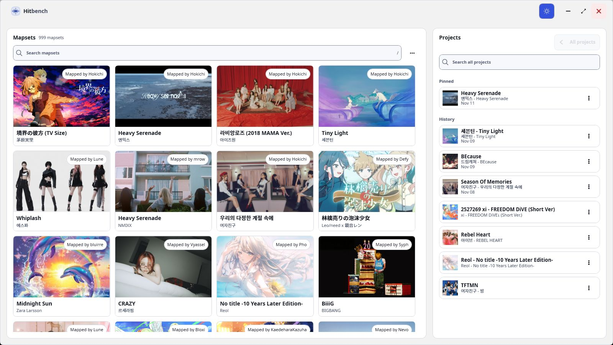
When a newer release is available, the header exposes an update action. Open it, review the available version, download the update, then follow the restart handoff. A missing update button can simply mean no newer release was found; check its status/error information or use GitHub Releases if the check/download fails.
Before updating, close active work normally and back up projects/ and saved/. The update package protects project/library/settings data during replacement, but a separate backup is still useful. For a manual update, retain your data folders and the source mapsets; do not discard them with an old extracted application folder.
Keyboard & mouse reference
Shortcuts depend on focus and the active drawer. A text box, open editor, or modal can consume keys or disable project actions. Finish the field or close the dialog before using a workstation shortcut. Instrumental history/selection belongs to the piano roll; sample-node history belongs to the main timeline.
Workstation and transport
| Input | Action |
|---|---|
| Space / Shift+Space | Play/pause / stop. |
| 1 / 2 | Select / Draw. |
| Left / Right | Navigate one grid position. |
| Ctrl+Left / Ctrl+Right | Navigate one whole beat. |
| Home / End | Move the timeline view to its limits; centered-marker mode navigates with that view. |
| Ctrl+Home / Ctrl+End | Seek to song start/end. |
| F8 / F | Switch marker mode / toggle Follow in moving-marker mode. |
| Ctrl+N / Ctrl+Shift+N | Add sample / instrumental track. |
| F2 / F5 | Open Manage Samples / refresh samples. |
| F4 / F6 | Expand/collapse all tracks / add control point. |
| Ctrl+1…6, Ctrl+8 | Select the corresponding subdivision preset (1, 2, 3, 4, 5, 6, or 8). |
| Ctrl+Z / Ctrl+Y | Undo/redo supported edits in the active editor. |
| Alt+V | Open volume overlay; arrows adjust by five, Escape closes. |
Sample nodes and control points
| Input | Action |
|---|---|
| Click / Ctrl+click / rectangle drag | Select / toggle selection / select a region in Select mode. |
| Node drag; Ctrl during drag | Move; copy selected nodes instead. |
| Ctrl+Enter | Toggle the active sample's selection when the sample grid has focus. |
| Ctrl+C / Ctrl+V | Copy timing pattern / paste to selected destination track at marker. |
| Alt+Left/Right | Move selected samples one grid step; on a control-point tag, move that point. |
| Alt+Up/Down | Transfer selected samples between tracks. |
| Delete / Escape | Delete selected sample nodes / cancel drag or clear selection. |
| Up/Down on control-point tag | Adjust control-point volume. |
| Right-click / Shift+F10 | Open the focused control point's context menu. |
Wheel gestures
| Input | Waveform / workstation | Piano roll |
|---|---|---|
| Wheel | Pan time over waveform; scroll tracks over track list. | Scroll pitch. |
| Shift+wheel | Pan time. | Pan time. |
| Ctrl+wheel | Zoom. | Zoom. |
| Ctrl+Alt+wheel | Change subdivision. | Use Alt+wheel for piano subdivision. |
| Ctrl+Shift+wheel | Change track height. | Change pitch-lane height. |
| Alt+wheel | Preview volume overlay. | Change subdivision. |
Piano roll and key mapping
In the piano roll, arrows navigate pitch/time; Enter draws/selects and Ctrl+Enter toggles a note. Alt+Left/Right shifts timing and Alt+Up/Down shifts pitch. Ctrl+A/C/V selects/copies/pastes notes, Delete removes selected notes, right-click removes an editable note, and Ctrl+Z/Y uses note history. Ctrl+Shift+Enter expands/collapses the arrangement.
In Keys Mapping, select a key before loading a sample; Enter applies a typed filename and Delete unmaps the selected key. F2 returns to Manage Samples from the key drawer. Clear All Mappings removes assignments while preserving notes.
Sample picker
Space toggles a file's checked state; Shift+Space checks a range; Enter opens a directory or checks an audio file. F6 switches Browse/Selected samples panes when the picker is narrow. Left/Right on its preview waveform seeks by 10 milliseconds; Home/End seeks to the preview's start/end.
Troubleshooting
No mapsets appear
Check that you selected a parent containing immediate mapset subfolders with top-level .osu files. Extract archives, clear search filters, then refresh. If using Locate osu! folder, select the installation containing osu!.exe. Check that the folder is readable and still connected.
A project cannot open or the waveform is missing
Restore its source mapset/audio location. Inspect the first ordinal .osu file and its AudioFilename; the file must exist inside the mapset. The project does not carry an independent copy of the song or provide a universal relink wizard. Keep a backup before editing source metadata.
A sound or instrument is silent
Check application Audio/Master volume, track mute/solo, track volume, control-point volume, and the assigned sample. Preview the file in Manage Samples. For instruments, verify that each used pitch has a valid mapping. For default tracks, check skin configuration, cached files, Allow skin's defaults, and Config Hitnormal. Refresh after external replacements.
A draw, paste, move, or shortcut does nothing
Confirm the correct mode, track, and keyboard focus. Close a modal/drawer that disables the action. Check song boundaries, duplicate timestamps, destination collisions, and locked notes. A control-point offset anchor cannot move/delete. Pasting sample nodes needs a destination sample track and uses its sound.
Following stops or the marker behaves differently
F8 switches marker modes. Follow is only available with a moving marker, and manual navigation/selection can turn it off. Re-enable F when you want playback to follow again.
MIDI sounds wrong, imports no notes, or shows locked notes
Review supported MIDI data and timing modes. Channel 10 percussion and pitches below 24 are excluded; only note attacks are imported. Map the keys to audio. Check tempo changes and source offset; attacks outside song bounds are locked. Convert unsupported data to format 0/1 PPQN in your MIDI editor before retrying.
Saving fails
Read the exact save error. Check free disk space, writable project folders, and files locked by another program. Keep Hitbench open while resolving the cause and use Retry save. Back up the current project directory before moving anything. Autosave cannot compensate for a path that remains unwritable.
Export reports a collision or fails
Try Project output first. Review names/indexes and existing output ownership. Beatmap output refuses existing filenames. Project output protects unowned or modified files unless you deliberately choose Overwrite everything. Check missing audio, mapped keys, decoding, and write access. Preserve any recovery files identified by the error. If only folder opening failed after export, inspect the destination before running it again.
A changed file is not reflected
Use F5 after external audio changes. Reassign externally moved/renamed files; refresh does not repair mappings by guessing. Reopen after intentional source timing/audio changes and verify the arrangement against the new source.
If the problem persists, prepare a small reproducible example and follow Reporting an issue.
Reporting an issue
Found a bug or have feedback or a feature request? First check Troubleshooting and existing reports to see whether it has already been covered.
What to include
- Title: a short summary of the issue or suggestion.
- Description: be as detailed as possible. For a bug, explain what you were doing, what you expected, and what happened. Steps to reproduce, error messages, screenshots, and your Hitbench version can help. For feedback or a feature request, describe what you would like to change and why.
Where to send it
- GitHub: open a new issue with your title and description.
- Discord direct message: send your title and description to hokichi on Discord.
- Discord server: join the Hitbench Discord server and post in #issue-and-feedback.
Before sharing screenshots or files, remove personal paths, account details, and unrelated private information. Share audio/mapsets only when you have permission to distribute them.
Keep follow-up details in the same issue or conversation, and let me know whether a later release fixes the problem.
Glossary
- Mapset
- An extracted song folder containing one or more
.osudifficulties, song audio, and related assets. - Project
- Hitbench's editable arrangement and copied samples. It remains linked to its source mapset.
- Sample / placement / node
- A sample is an audio file. A placement or node tells a track when to trigger its sound.
- Sample track
- A layer that uses one assigned sound or default hitsound role for its placements.
- Instrumental track / piano roll
- A pitched arrangement whose rows are musical keys, with samples mapped per key.
- Key mapping
- The assignment connecting one instrumental pitch to its recorded audio file.
- Beat / subdivision / snap
- A beat follows the song timing. A subdivision divides it into editing positions; snapping aligns events to those positions.
- Offset
- The source timing's starting position in song time; the initial control point is fixed at that anchor.
- Control point / zone / ramp
- A point begins an automation zone. A ramp interpolates its volume toward the following point.
- Sample set / hitnormal
- Normal, Soft, and Drum group default hitsounds. Hitnormal is their base hit sound, configurable separately in the project.
- Static / moving marker / Follow
- A static marker stays centered; a moving marker crosses the view. Follow keeps a moving marker visible during playback.
- Mute / solo
- Mute excludes a track. Solo restricts the active set of tracks. Both affect playback and export.
- Saved Samples
- The shared reusable library under
saved/, imported through the sample picker. - MIDI / PPQN
- MIDI describes note events rather than recorded audio. PPQN measures musical time in ticks per quarter note.
- Hitsound difficulty / sample bank
- The generated
.osuarrangement and indexed audio roles used to play its hitsounds. - Single / mixed sample
- A single generated sound versus audio produced by combining sounds for overlapping events.
- Autosave / backup
- Autosave writes current edits. A separate backup preserves a recoverable copy beyond ongoing changes.